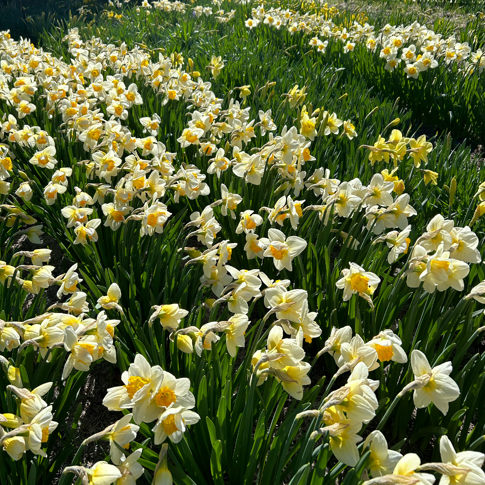
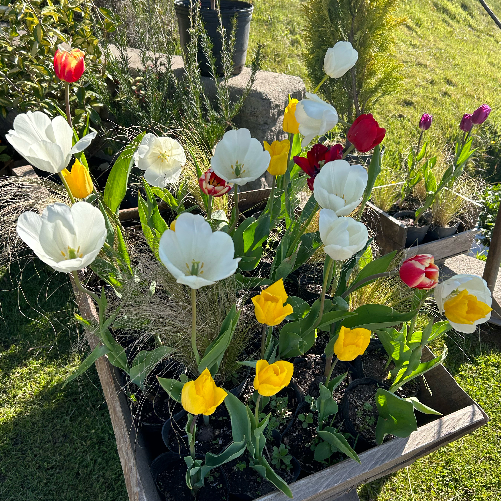
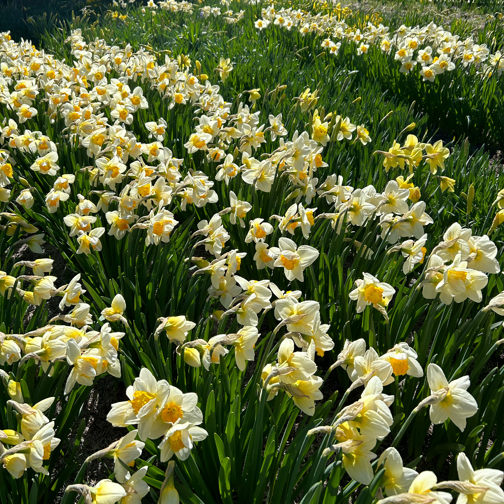
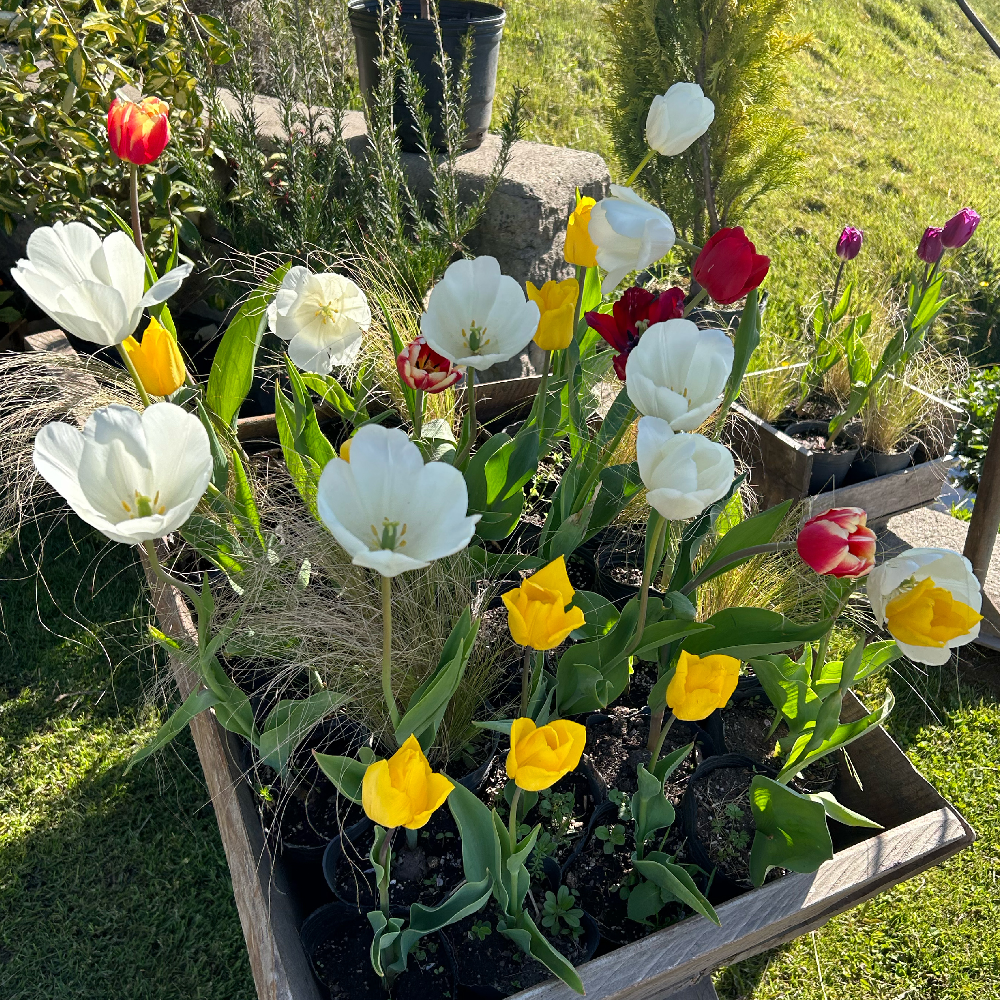
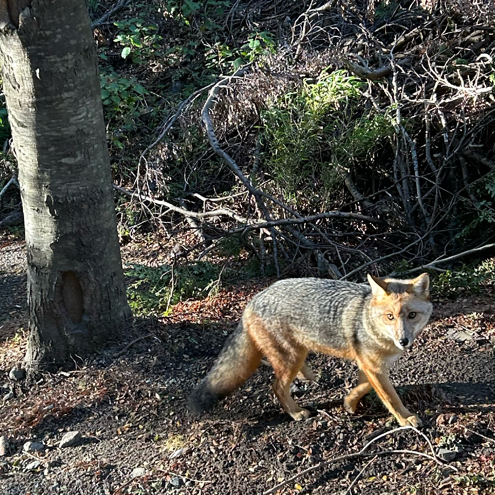
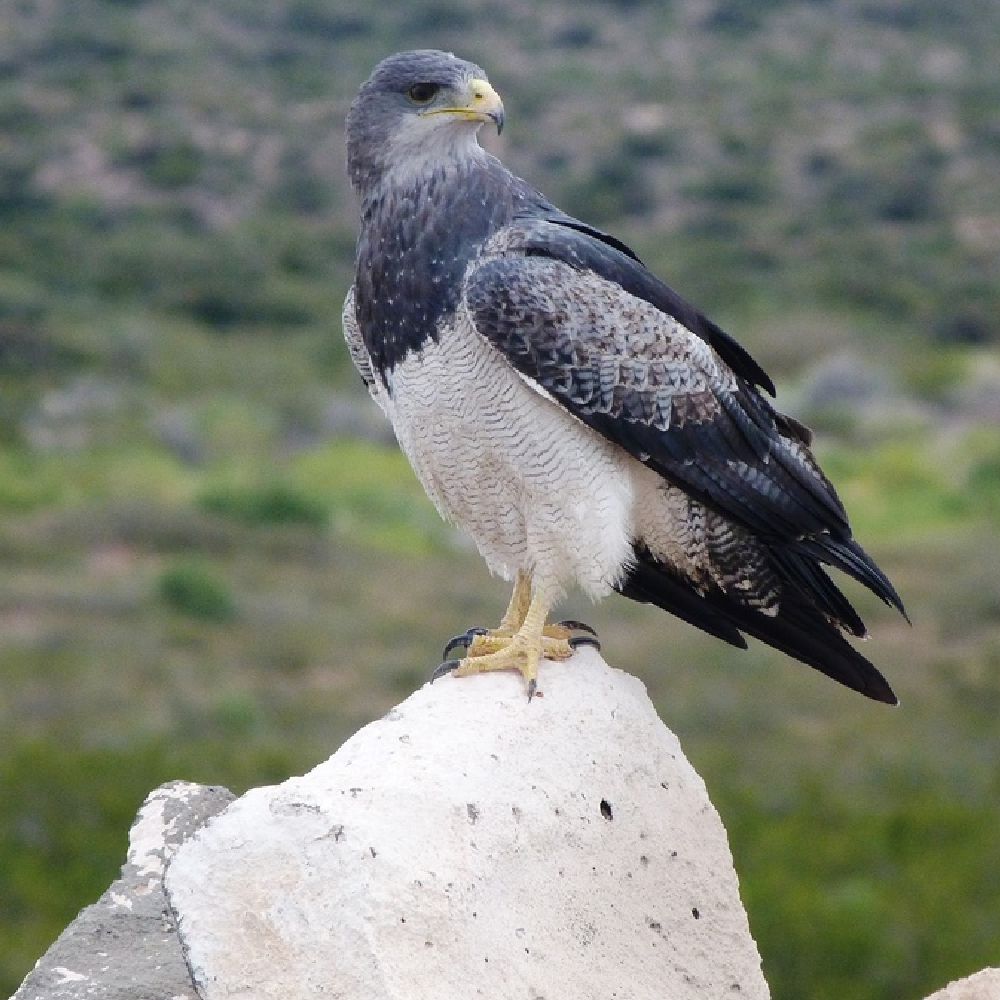

Lago Nahuel Huapi
Este famoso lago, compartido por las provincias de Rio Negro y Neuquén, es uno de los principales atractivos de la ciudad. Podrá recorrerlo por la Av. Exequiel Bustillo y detenerse a disfrutar las vistas en sus miradores. Cuenta la leyenda que en las profundidades de este lago habita el Nahuelito, una enorme y misteriosa criatura.
Flora
Si visita en la primavera o en el verano, podrá apreciar distintas flores, como los lupinos, narcisos y tulipanes.
 



Animales patagónicos
Conozca aves típicas de la región como el águila mora y la bandurria. Recorriendo el Circuito Chico, seguramente se cruce con algún zorro.

